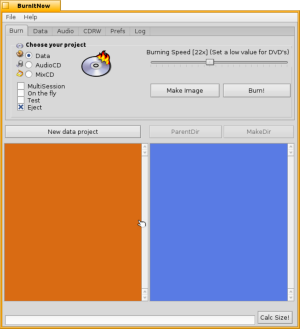
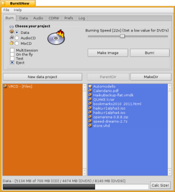
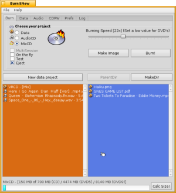
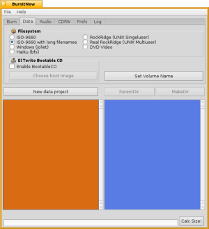
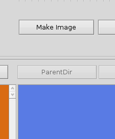
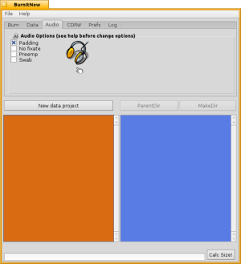
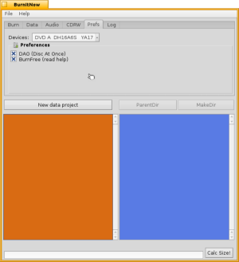

Quick Start Guide
BurnItNow BETA 6 is a
GUI Frontend for CDRecord and mkisofs.
You can burn AudioCD, DataCD, MixedCD, ISO files.
You can also use this app to make ISO
image or your files, eg to backup
your personal data (you can also make BFS
disk images).
This new version has many
fixes/improvements
compared to BETA5. Now you can properly burn AudioCD's, the GUI
supports
DVD's size,
you can set a max. burning speed of 48X and you can rearrange files in
the list.
Main window
This is the main Window, where you can choose what kind of project burn on CD's and DVD's.
In the left panel (orange) you can insert Audio files, ISO images and make a virtual project to insert data files.
In the right panel (light blue) you can insert any kind of data file
Here you can also set some options:
Multisession (a multisession disc is a disc to which data files are added incrementally in more than one recording, allowing you to add, update, or delete files and directories. All the data on a multisession disc can be seen as if it were all recorded at the same time (if you linked the data between sessions)
On the fly (an example of burning on the fly might be copying a CD using your CD ROM (source) and your CD burner (destination) at the same time, otherwise, if this option is disabled, data files will be copied before in a temp ISO file and then burned)
Test (this is a dummy mode: enabling this option will be performed only a burning simulation; will not written anything and it is very helpful for testing and see if the write speed is good enough and if the read/write buffer of the burning device are always filled with CD data)
Eject (will eject CD/DVD after burning).
Burning data on CD's and DVD's
After choosing Data as project, you have to click on "New data project" button, to start a new project in the left panel. Then you can drag any kind of data files in the right panel.
Clicking on "Calc Size!" you can see what kind of media (CD 700 MB, DVD5, DVD9) you need for the project.
After that you have to choose the burning speed (a max value of 10/16X if you write data to a DVD).
Burn an audio CD

To burn an audio CD you have to simply drag your audio files in the left panel. You can also rearrange files by right click and choosing "Move Up" and Move Down", you can also remove and play files. Clicking on "Calc Size!" you will see duration in MB and minutes.
Note: at the moment in BurnItNow BETA 6, you can only insert wav files as audio files.
Burn a Mixed CD
A mixed CD is a CD which contains Data and Audio files together.To properly burn this kind of CD you have simply to choose "MixCD" as project, and repeat the above steps for inserting data and audio files together.

To burn a mixed CD, you have to repeat the steps for burning Data and Audio CD's
Adjust the preferences
In this section you can see how to set properly options and preferences.Filesystem
In this tab you can choose which kind of filesystem will be used for burning Data CD's and DVD's.
This option will also affect the kind of ISO image which you can make using the "Make Image" Button.

By clicking on "Make Image" you will create an ISO image of your data files (you can also choose to make an BFS image, eg to backup Haiku's files)
The most common option to choose is ISO-9660 with long filnames, otherwise the names of your files will be truncated.
Audio Options
Padding is the only audio option to finalize a standard AudioCD; all other options are for the most part obsolete (useful only with older cd burners), and you can leave them unchecked.
Other preferences
Here you can set other preferences: DAO (Disk-At-Once) and Burnfree.
DAO - Disk at Once, writes the leadin, all the tracks and the leadout as a single operation, producing a finalised disk. Audio track gaps can be eliminated, CD-Text can be written (if supported), but it is not possible to allow further additions. You have to prefer DAO to TAO; is more compliant. But in anyway you have to deselect DAO if you want to burn a multisession CD/DVD.
Burnfree - buffer underrun protection, is a technology designed to allow disk burning applications to recover if at some point the drive is burning data faster than the application can send it. Enable it.
Devices - Here you can select which burner device to use.